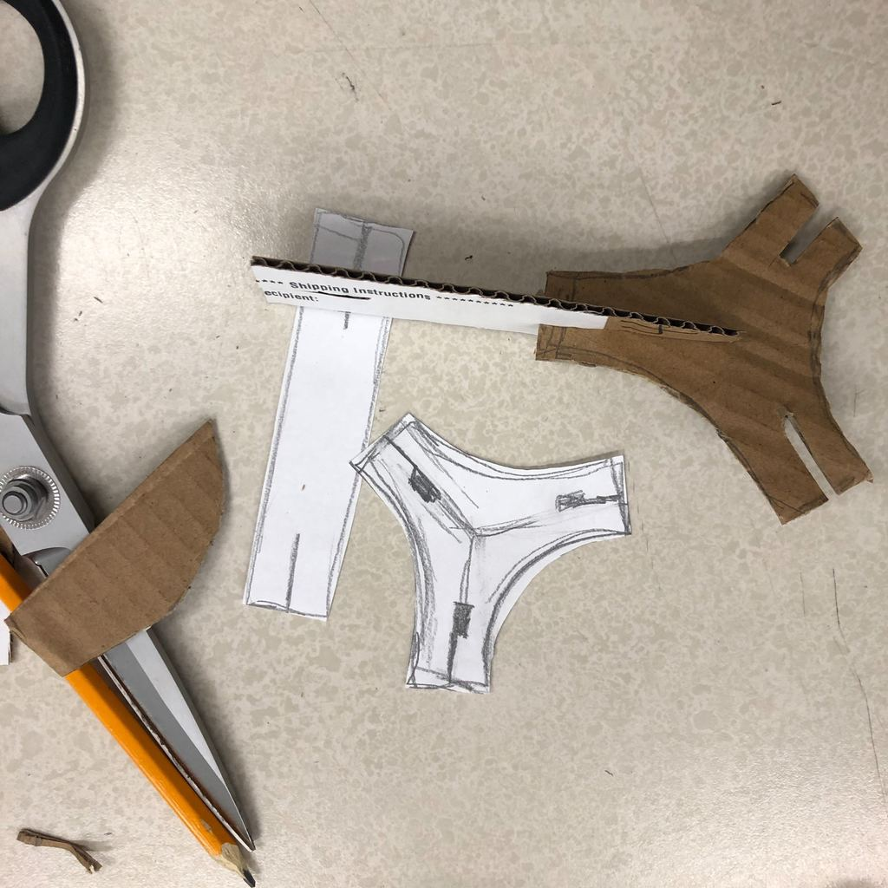
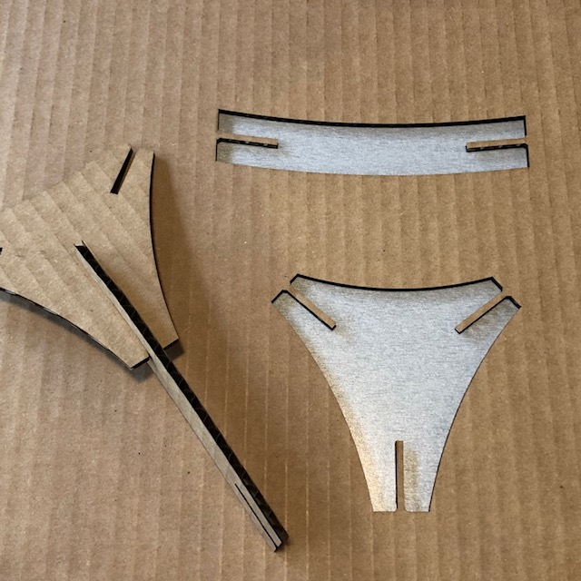
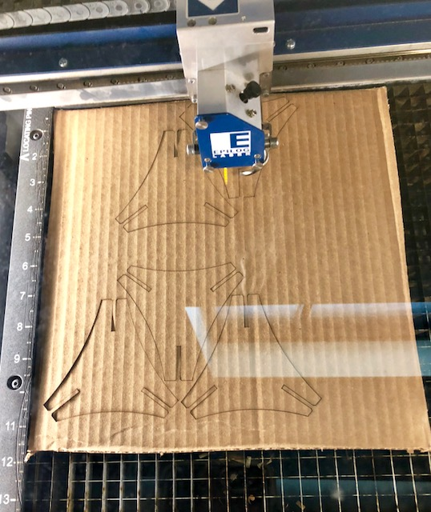

Dawn Ferguson's Assignment 1: Construction Kit

Working off the idea of a geodome I started to design my consturction kit to highlight the shapes made by negative space
I tested my design with cardboard and scissors just to work out some angles and overall design.
First test cut fit nicely thanks to the measurements taken with the digital calipers. By usig mm grid and ruler in Illustrator I was able to design the parts with the appropriate size from the beginning.

Steps Taken:
1.Identified shape to explore
2.Cut out paper pieces to understand angles
3.Started designing shapes in Illustrator by combining shapes and using the scissor tool to eliminate unwanted lines
4.Test cut on the laser cutter using 25% speed and 100% power, vector only setting and making sure my source media dimensions were set correctly. I was very grateful for classmate Andrew who was nearby so that I could observe the process of setting the controls before trying it on my own.
5.First test fit!! I played around with the lengths of parts and experimented with the size, but ultimately returned to a larger unit because of the cardboard limitations.
6.Upload the illustrator file with a lot of help from Ping
Final Result in class!!!